A white-label booking and operations platform for dive shops in the Maldives. It started life as Arena Dive Club's internal app, then I hard-forked it and rebuilt it to serve many shops at once. It is in closed beta at version 0.19.2.2, and Arena is still the primary tenant.
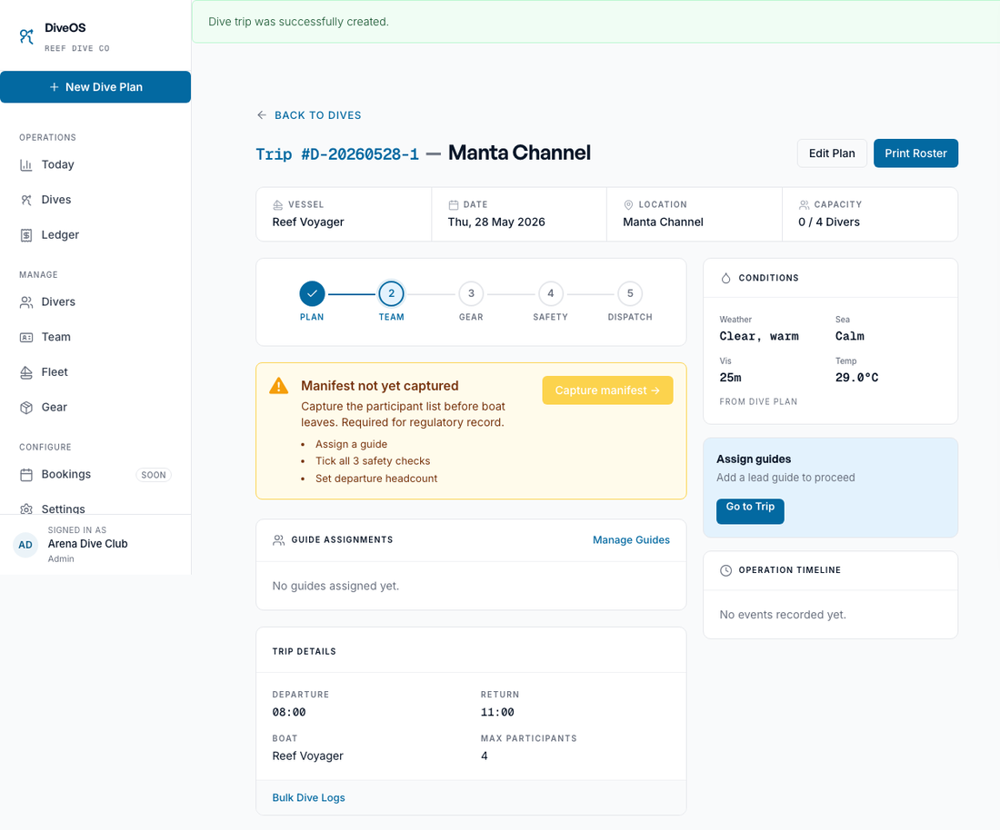
DiveOS · trip detail, plan to dispatch
Project
DiveOS, with Arena Dive Club as the primary tenant
DiveOS is the software a dive shop runs its day on. Bookings come in from a public storefront, get planned into trips, get boats and guides and gear attached, produce waivers and manifests, and end as an invoice. It's white-label, so each operator gets its own domain and its own accent colour, and it's in closed beta at version 0.19.2.2.
It didn't start that way. It started as Arena HQ, the internal app I built for one dive centre in the Maldives, Arena Dive Club. DiveOS is a hard fork of that app, reworked so a single deployment can serve many shops without any of them seeing each other.
The stack is deliberately plain: Ruby 3.4.7, Rails 8.0.4, Bullet Train 1.38.0, PostgreSQL, Sidekiq 8.0.9, Tailwind 3.4.17, Turbo 8 and Stimulus 3.2 over esbuild 0.27 and Propshaft. Devise for accounts, CanCanCan for permissions, Doorkeeper for the API, Prawn for PDFs, Avo for the platform back office. No Webpack. No React and no Vue. No ViewComponent in the app code.
532
Database migrations
713
Test files
139
Stimulus controllers
79
Releases in the changelog
02 · arena hq, before
It Started as One Dive Shop's App
Arena HQ was written for one shop, which means it was written with one shop's assumptions baked into everything. There is one price list. There is one set of boats. There is one logo. Nothing in the code has to ask whose data this is, because there is only ever one answer.
Turning that into a product is mostly the work of removing that answer. Every query has to know which shop it belongs to. Every page has to know which shop the visitor arrived at. Every email, invoice and PDF has to carry the right name. And the platform needs a floor above the shops: a place where I can see all the operators, suspend one, or step into one to reproduce a bug.
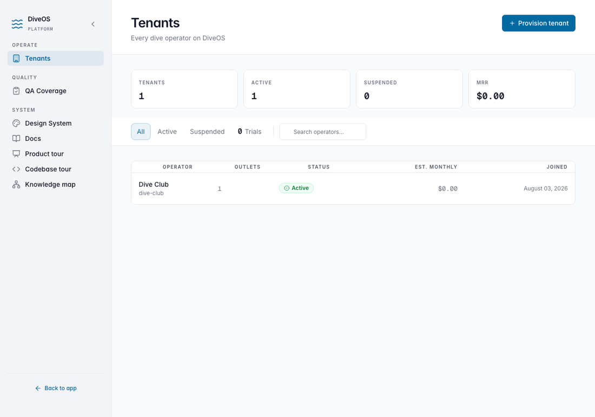
The platform floor: every operator on DiveOS in one list
This is the part I'd want to read if someone else had written it, so here it is. The first commit that carries the DiveOS name is dated 2026-05-16. Version 0.1.0.0, the entry the milestone log calls the genesis of DiveOS, lands on 2026-05-21. That is the neat version.
The messy version is that Arena HQ kept shipping to production the whole time. A real dive centre was taking real bookings out of the app I was forking, so the fork was never allowed to be a fork in the clean sense. It was two lines of work running side by side, one of which couldn't be paused.
You can read that off the repository. There are exactly three git tags in the whole project, and none of them mark a release: pre-arena-sync-2026-06-09, sync-complete-2026-06-12 and backup/pre-sync-local-2026-06-22. They are safety markers, dropped before and after the risky bits of catching up with production. The 0.16.0.0 milestone on 2026-06-12 is titled as catching up to the production tip, and it records the DiveOS branch standing 481 commits ahead of the arena-hq base it forked from.
The rename came later still. ArenaHq became DiveOS across the code on 2026-07-29 and 2026-07-30, and I wrote it up as a dated rename audit that bucketed every remaining occurrence rather than pretending a search-and-replace had covered it.
The commit count needs a caveat rather than a boast. The repository's total is inherited from the Bullet Train starter repo, whose first commit is from 2016 and whose own authors and dependency bots sit in the top ten contributors. Counting those as mine would be nonsense. The number I'm willing to stand behind is roughly 4,100 commits on this codebase since April 2026, across everyone who has worked on it.
03 · spec, plan, build
Running It
It's a small team, so process here is not ceremony for a big organisation. It's a filing habit, so that whoever picks a thread up in three weeks, usually me, can find out what past me was thinking without reading the diff.
The shape is spec, then plan, then build, then gate. Under docs/superpowers/ there are 70 dated design specs and 66 dated plans, all named YYYY-MM-DD-slug, and they pair up: a spec argues what should happen, the plan next to it says how, in order. Another 30 completed plan artifacts have been moved into docs/archive/ once their work landed. There is a backlog/ and a handovers/ folder alongside them.
1
Spec
A dated document that argues the problem and the shape of the answer. Written before any code, so the argument can be lost on paper instead of in a branch.
2
Plan
The same date, the same slug, the ordered steps. It is the thing I actually work from, and the thing I re-read when I come back cold.
3
Build
Small merge requests against the plan. When the plan turns out to be wrong, the plan gets edited, not quietly abandoned.
4
Gate
A test, a lint rule or a baseline snapshot that stops the same mistake coming back. If a fix cannot be gated, it is not really finished.
The Changelog Is Written as Prose
There are 79 versioned entries in CHANGELOG.md and not one of them is a bullet dump of commit subjects. Each entry has a headline that names the user-visible symptom, then explains the cause, then the fix. The most recent one is version 0.19.2.2, dated 2026-08-10, headlined "Trip-equipment checkbox felt laggy to toggle".
Writing them this way is slower, and I'd do it again. A symptom-first headline is searchable by the thing a person actually remembers.
The same instinct runs through TODOS.md, which is 2,329 lines with completion dates and RESOLVED markers rather than deletions, so the file is a record and not just a queue. It carries non-engineering items too. One of them is simply a note to validate MVR demand during the first three conversations with paying tenants, which is a product question sitting in the same list as the code.
Documentation drifts, so there is a test for that as well. A docs-drift test enforces an eight-file allowlist for markdown at the repository root and pins the README badges to .ruby-version, .nvmrc, Gemfile.lock and VERSION. Its own comment records why it exists: the old README advertised Node 19 for weeks while .nvmrc said 22.
Gates That Only Tighten
I did the same thing three separate times before I noticed it was a pattern. StandardRB in CI lints only the files a merge request changed. The config comment explains the reasoning plainly: a repo-wide run reports 628 pre-existing offences, and a job that is red on day one is a job everyone learns to ignore. The design-system analyser works off a baseline snapshot, and only offences whose key is missing from the snapshot fail the build. The design-system maturity file tracks a debt counter per component family that has to drain to zero before that family reaches the top rung.
A job that is red on day one is a job everyone learns to ignore.
CI Arrived Late
The test stage did not land until 2026-07-31, about two and a half months after the fork. Before that, verification was something I did locally.
The header comment on the pipeline says what it cost. Until that stage existed, nothing ran the suite on a merge request, and that is how a regression that denied every user the ability to create a dive trip shipped and then sat on main across several merge requests. Creating a trip is the central action in the product. It was broken, and the tests that would have caught it were sitting on my laptop.
It shipped as allow_failure while main still carried 12 failing tests, then was tightened once a full run came back green.
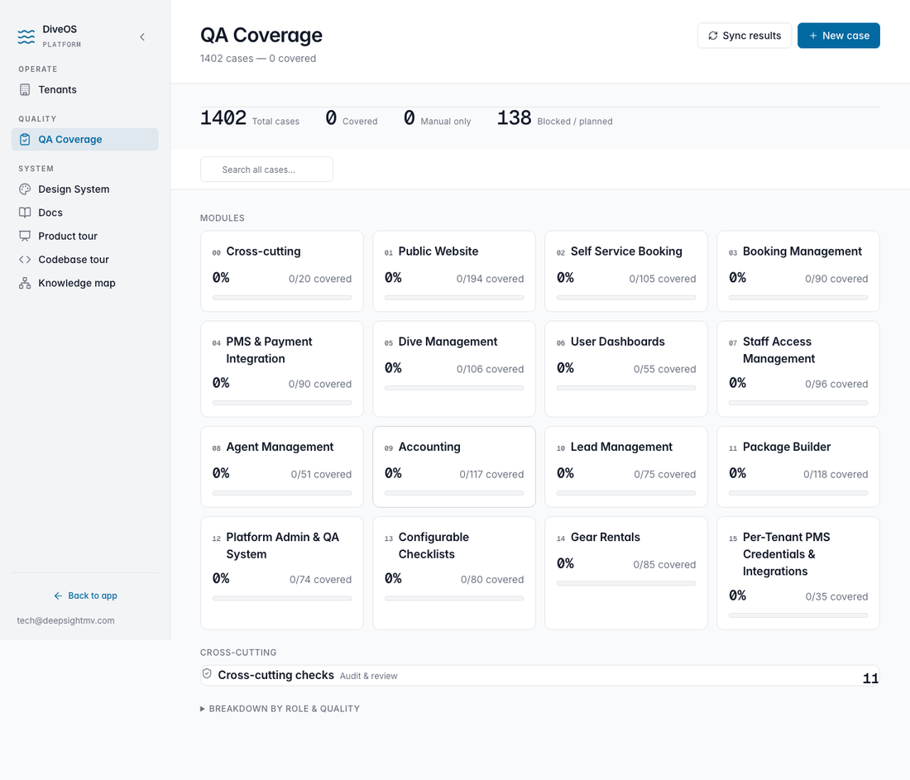
The QA coverage dashboard lives inside the app, next to the thing it measures
For scale: 713 test files, 80 of them system tests driving a real browser, plus 23 separate lint gates. The QA corpus itself lives in the database with an Open Knowledge Format projection on disk, and I'm not going to quote a case count here, because the two sources disagree and I haven't sat down to reconcile them.
04 · four namespaces
How It Is Put Together
The controllers are split by who is asking, not by what the feature is called. There are four namespaces and each one has a different answer to the question "how do I know you are allowed to see this".
Public:: is for people who are not logged in at all. Identity is an unguessable token in the URL. Eight controllers.
Account:: is signed-in staff of exactly one shop, and every record is loaded through that shop. One hundred and six controllers, the bulk of the app.
Api::V1:: is machine clients, authorised through Doorkeeper. Thirty-eight controllers.
Admin:: is me and platform staff, above all the shops. Twelve controllers.
Splitting this way means the security question is answered once per namespace instead of once per action. config/routes.rb is 890 lines, ordered by namespace.
The public routes are declared with format: false, so a .json suffix cannot slip past the rate-limit throttles, whose path patterns are anchored at the end.
One Variable Everything Reads
TenantResolver is a Rack middleware wired in at config/application.rb:89. It runs before Rails routing does anything, reads the hostname, works out which shop that hostname belongs to, and parks the answer in Current.team. Everything downstream reads that one variable.
Resolution goes in order: an exact custom-domain match first, then a slug.diveos.mv subdomain, then a fallback to the primary team. That last hop is convenient and it is also the dangerous one, so the middleware records which route it took in Current.tenant_resolved_via. The unauthenticated public API can then refuse to serve anything that arrived by the fallback, which means a crafted Host header cannot be used to read the primary tenant's data.
flowchart TD
Req["Incoming request"] --> TR["TenantResolver (Rack middleware)"]
TR -->|"1. exact custom domain"| Cur["Current.team + Current.tenant_resolved_via"]
TR -->|"2. slug.diveos.mv subdomain"| Cur
TR -->|"3. primary team fallback"| Cur
Cur --> Router["Rails routing"]
Router --> Pub["Public: token in the URL"]
Router --> Acc["Account: signed-in shop staff"]
Router --> Api["Api V1: Doorkeeper OAuth"]
Router --> Adm["Admin: platform staff"]
classDef edgeClass fill:#f8f9fa,stroke:#0dcaf0,stroke-width:1px
class Req,TR,Cur,Router edgeClass
The hostname is resolved to a tenant before Rails routing runs, and how it resolved is remembered
Custom domains only start routing after verification. DomainVerificationJob watches DNS and TLS state and moves a status enum along, from pending_dns to pending_cert to active, or to failed. It holds no infrastructure credential of any kind. A human still registers the domain with the proxy in between, and the job just observes until reality catches up, up to 60 attempts two minutes apart. Giving a background job the keys to the edge proxy would have been less typing and a much worse idea.
Permissions Are Rows, Not Constants
Roles live in a table, not in the code. The Role model is around 600 lines covering nine labelled permission groups across 70 model names, with cycle detection so an inherited role cannot loop back on itself. A shop owner can therefore invent a role I never anticipated without waiting for a deploy.
Underneath, account_load_and_authorize_resource appears 82 times across the controllers. That matters more than it sounds: it means no controller is hand-writing where(team_id: ...), and tenant scoping is not a thing anyone has to remember. There is also a drift-guard test that fails if a team-owned association appears in neither the write-blocked list nor the allowlist, which forces a deliberate decision every time a new model joins the app.
Bullet Train's super_scaffold generator splices code into existing files by looking for literal emoji marker comments. There are 1,442 of them across 363 files. Tidy one away and nothing breaks today; the generator quietly does the wrong thing weeks later.
Hotwire Instead of a Single-Page App
The front end is Tailwind and esbuild. No Webpack. The only exotic bit is a small hand-written esbuild plugin that expands glob imports, because esbuild has no equivalent of require.context and the alternative was maintaining an import list by hand.
There is no client-side framework. The front end is 901 ERB templates, two-thirds of them partials, with 139 Stimulus controllers doing the interactive parts and sixteen Turbo Stream templates handling the server-driven updates. That works out to 261 data-controller attachments across the views.
The Stimulus controllers cluster where you would expect: wizards, the public booking funnel, dive operations, gear, finance and point of sale, design-system primitives, waivers and signature capture, and the integrations. There is a custom Turbo Stream action in there that lets a server response close the layout's side drawer, so the closing logic exists once instead of in every form that lives in the drawer.
The component layer is partials, CSS classes and Stimulus. That is it. Ten named pattern partials in app/views/shared/patterns/ carry the recurring compositions. I keep expecting to regret not having a component framework and I haven't yet.
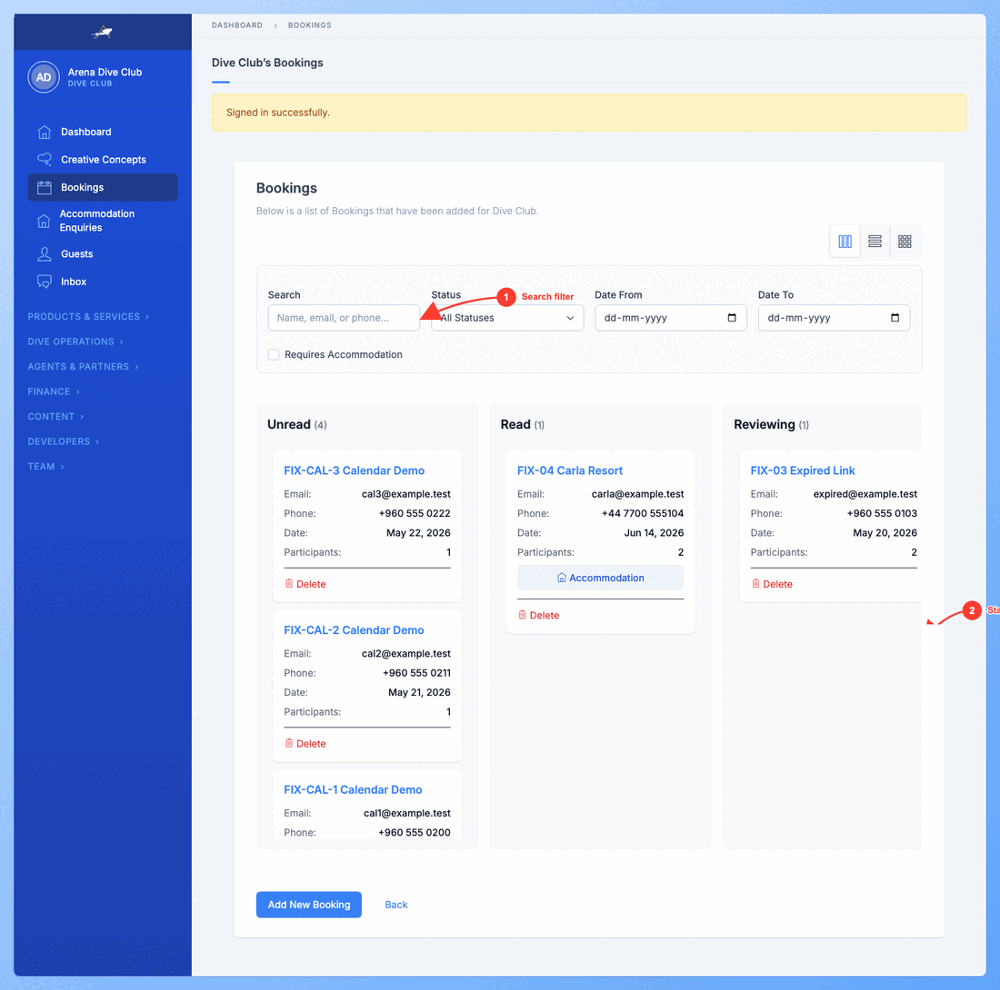
The booking pipeline as a board, dragged between columns
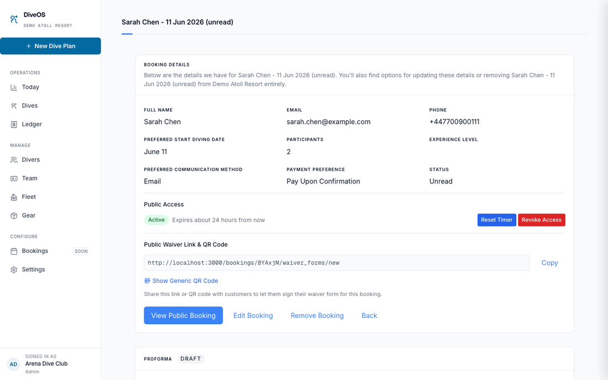
A booking, opened out: divers, dates, equipment, money
The Booking Funnel
The public booking wizard is the one screen a customer of a customer will ever see, so it gets more care than anything else. It is Stimulus-driven rather than a multi-request wizard, it works on a 390px phone, and the running total updates per diver as options change. The waiver flow next to it is the one built on wicked.
The earliest bookable date used to be computed in the browser. A customer in a far-away timezone would open the form and be offered a floor a day off from what the shop in the Maldives believed, because new Date() answers the question the client asks, not the question the shop asks. It is computed server-side in the shop's time zone now.
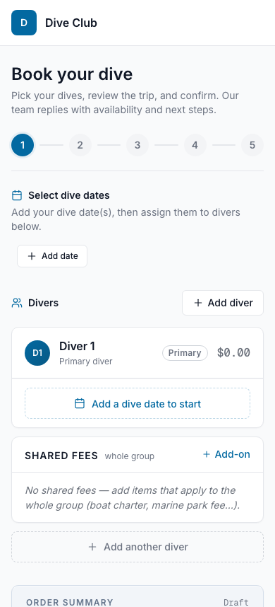
Step one on a phone
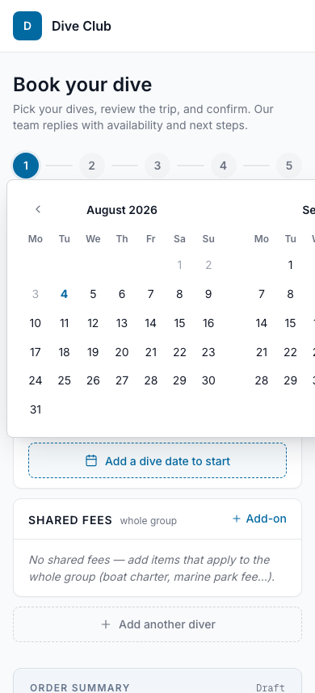
The date picker opens in the card, not over it
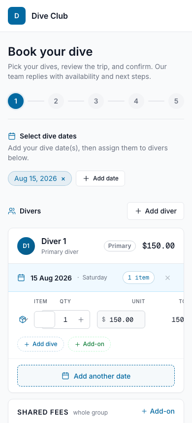
A running total, per diver
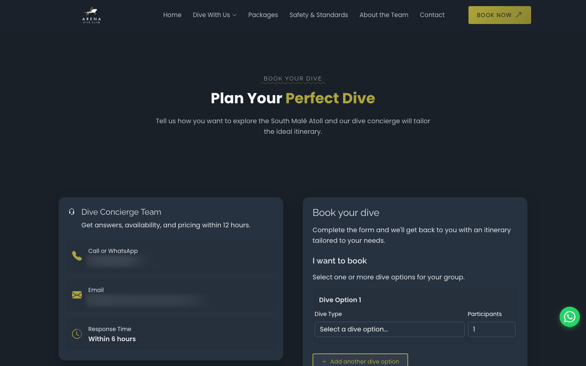
The same form on the shop's own domain, in the shop's own accent colour
05 · one yml manifest
The Design System
It starts with a manifest. design-system-registry.yml is 229 lines describing what should exist: 18 component families, 17 of which have a canonical primitive. The eighteenth was links, and the file named its own gap out loud, in capitals: no link class, no helper, every link in the app hand-styled. That entry is now out of date, which is the point of writing it down. There is a .dv-link class and a dv_link_to helper, and links is one of the families that has since been gated.
The registry also carries a machine-readable defect ledger with four buckets, including raw Tailwind utilities leaking through and duplicate CSS definitions.
A Four-Rung Ladder Per Family
design-system-maturity.yml is 325 lines and gives every component family a ladder to climb. Rung one: a canonical class exists. Rung two: variants and states are documented. Rung three: it is demonstrated in the in-app showcase. Rung four: a gate test enforces it, so it cannot silently rot.
The maturity file is the wider register of the two: 30 families tracked here against the registry's 18 primitives. Eight are fully gated at rung four, three are partial, and 30 call sites of migration debt remain. Those numbers drive a dashboard inside the app.
One entry records a decision not to gate at all. A hard gate on cards is not feasible, because structural panels, chart panels and kanban panels all share the same chrome, and any rule strict enough to catch a bad card would flag three legitimate things. That refusal is written down next to the rules that shipped.
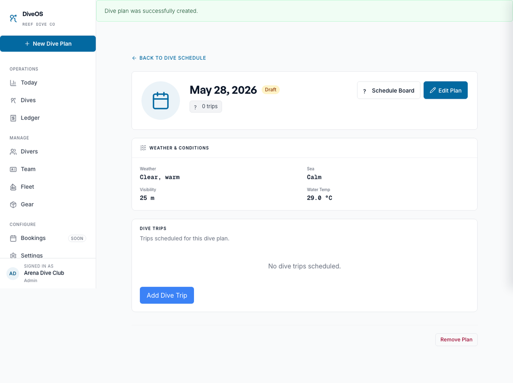
The day plan hub
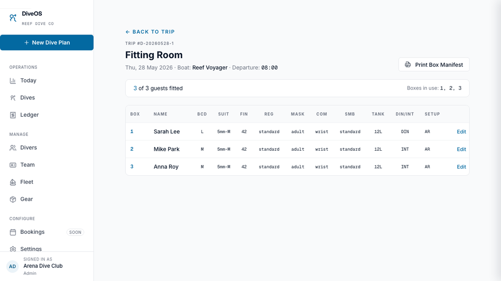
Fitting Room, gear allocated per diver
Hallmark, and Why It Needed an AST
Hallmark is the static-analysis engine that checks the code agrees with all of that. It is written inside the repo, 2,486 lines with 1,656 lines of its own tests. Five adapters read ERB, CSS, JavaScript, Ruby helpers and HTML, and feed seven rules.
Six of the rules are the sort of thing you would expect. Raw palette utilities. A naked hex value anywhere outside the token file. Any reintroduction of a dark: variant. Type sizes that are off the scale. Static inline styles on properties the tokens are supposed to govern. Data tables that are not wrapped in the blessed wrapper.
The seventh is the interesting one: lookalike detection. It catches markup that has been hand-styled to imitate a component the design system already provides. The comment in the source explains why an AST was necessary. A line-based regex cannot see these, because the tell is not any single utility, it is a co-occurrence of several, often split across lines or hidden in one branch of a ternary.
Tuning it was most of the work. Plain uppercase table headers were the main false positive, fixed by excluding th and thead. An early card signature that matched a single node was rejected as too generic, because about 37 files use the same rounded box legitimately; the rule now fingerprints the composition of a wrapper together with its children instead.
The Baseline Is the Ratchet Again
The baseline snapshot declared 279 accepted offences on the day it was taken. A read-only run while I was writing this reported 262, with zero new drift. Seventeen fixed, nothing added.
A baseline key is the file plus the rule plus a token signature, and deliberately not the line number. Line numbers churn every time anything above the offence is edited, and a baseline keyed on them would go stale within a day and start failing for reasons nobody caused.
There is no dedicated CI job for any of it. The gate is a Minitest test that rides along with bin/rails test, so it runs everywhere the suite runs and needed no CI configuration to exist. Given how late CI arrived, that was lucky.
The engine that hallmark replaced is still there: the old line-regex gate, 2,383 lines of it, kept alongside a parity harness that reports true positives the new engine missed, false positives it dropped, and catches only the AST version finds. A strangler-fig migration written down as a strangler-fig migration, so nobody has to guess whether the old file is dead yet.
Extracting It, and the Failure That Created
The system has since been pulled out into a shared Rails engine gem, consumed by two products. Extraction creates a new failure mode, and there is a gate test that names it: a local rule silently redefining one the gem already owns. That's not hypothetical. One class shadowed the gem's version for four releases with no error, no failing test and no visual clue that anything was wrong.
A diff at the level of class names claimed 40 duplicates between the app and the gem, and the obvious conclusion was to delete two stylesheets. A second diff at the level of rules showed those files share zero rules with the gem. They happened to use the same class names for different declarations. Deleting them would have destroyed about 1,500 lines of working CSS. I'd been diffing at the wrong unit, and the unit decided the answer.
What Tenants Can and Cannot Change
A tenant can override exactly one variable: the accent colour. Everything else is fixed. A cancelled trip is the same red at every shop on the platform, which means I can support a screenshot from any tenant without first asking what they've done to their palette.
The design document's rule for that accent is rejection below 3:1 against the canvas. What ships today is not the rejection but a repair: the accent gets darkened in steps, up to twelve of them, until white button text on it clears 4.5:1. The funnel's primary buttons are the reason for the stricter number, and the validation that would refuse a colour outright is still sitting in the doc rather than in the model.
Status is never carried by colour alone. Every status is an icon plus text, tested at 4.5:1 and against three colour-blindness simulations. On a boat, in the sun, on someone's cracked phone, colour is not a channel you can rely on.
The design document also carries 13 anti-slop hard rules, which are as much about my own defaults as anyone else's: no purple gradients, no three-column grids of icons in circles, no centered hero. The banned-word list is separate, five more rules that apply only to marketing copy on the storefront.
Building everything on CSS custom properties means email cannot come along. Mail clients do not support custom properties, so the mailer has its own PostCSS and Tailwind configuration that flattens every token to its literal value at build time. Two CSS builds, two outputs, two watchers in the development Procfile.
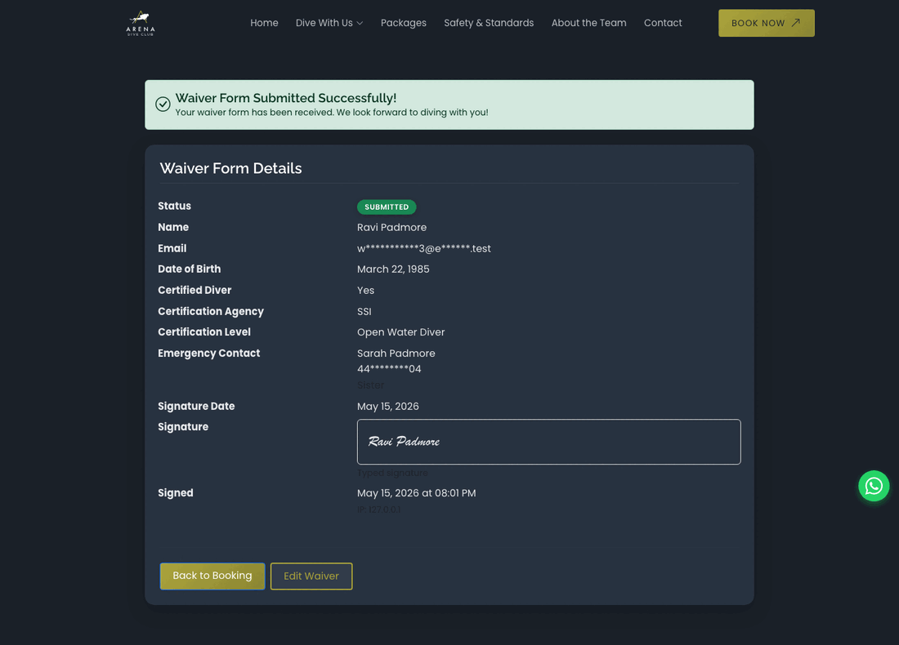
A submitted waiver. Status is an icon and a word, never just a colour, and the diver's contact details are masked on the page itself
06 · obvious was wrong
Five Problems Worth Writing Down
These are the ones where the obvious solution was wrong, and the wrongness wouldn't have announced itself.
1. Trial mail containment
A trial workspace is a real tenant in every respect except one: who it is allowed to contact. Without an interceptor, a prospect poking around the product could send booking confirmations, waiver links and invoices to real strangers, from a shop that will be deleted in 37 days. The interception is opt-in by construction, and that was the hard part to accept, because the naive rule reads so much better: if the team is on trial, redirect all mail. That rule would also have swallowed platform alerts and delivered them to the prospect, and nothing anywhere would have raised an error. Opt-in has a cost, so the cost got its own gate: every mailer action must be explicitly declared as either tenant mail or a listed platform mailer.
2. Trial signup is two-stage on purpose
No tenant exists until the confirmation link in the email is clicked. If a tenant were created on form submission, every unverified bot post would mint a full organization, a team and a seeded catalog of courses and equipment. A pending signup is one cheap row instead. Bot defences are a honeypot field and a minimum fill time, and a rejection returns the same success interstitial a real person sees, because telling a bot precisely why it failed is free tuning data for the bot.
3. Bank of Maldives webhooks resolve the tenant before verifying the signature
Every instinct says verify first, then look things up. It does not work here. The bank signs with the merchant's key and posts to one fixed URL with no tenant anywhere in the host, so there is nothing to verify against until you know whose payment this is. The tenant is resolved first, then the signature is checked with that tenant's key. The alternative would be checking every tenant's webhook against one global key, which defeats the point of per-merchant keys entirely. Resolution is a database id match against our own stored transaction id, not trust in anything the payload claims, and there is replay protection set at twice the gateway's own timestamp tolerance.
4. PDFs that are byte-identical twice
Prawn stamps no timestamp unless you ask it to, so the shared report layout sets creation and modification dates to a fixed injectable value and embeds no external fonts, using Prawn's built-in Helvetica. Two renders of the same input then produce byte-identical output, which means the PDF can be asserted in a test like any other string.
5. The Dockerfile's font packages have an incident behind them
Prawn's built-in Helvetica only knows Windows-1252, so an invoice for a guest whose name is not spelled in Latin characters returned a 500 on download. Noto and DejaVu are installed in the image for that reason and no other. git is in there for a different reason: a vendored path gem re-evaluates a gemspec that shells out to git, and without it Rails does not boot at all. Both lines look like clutter until you know, which is why both have a comment.
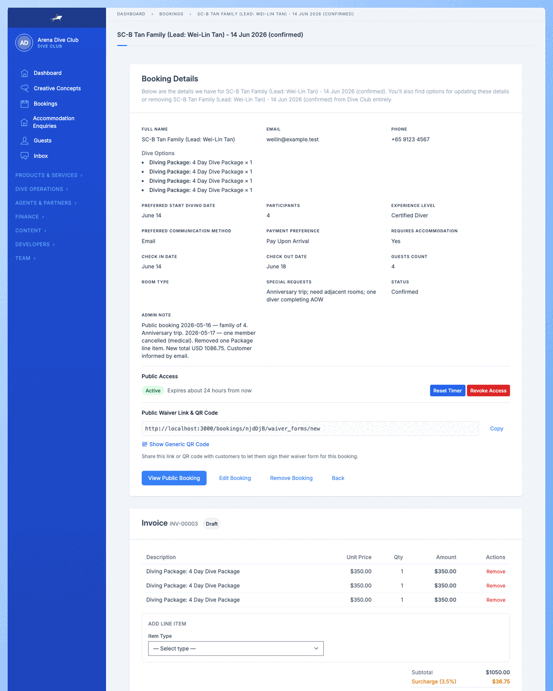
A multi-line invoice with a card surcharge
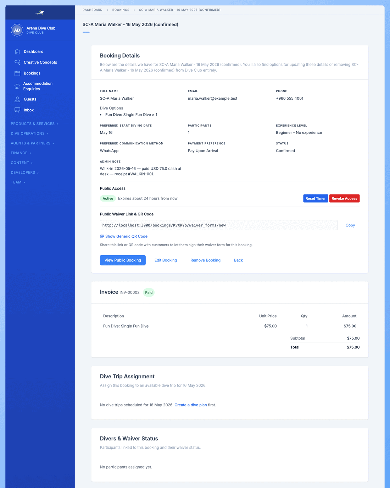
The same document once it is settled
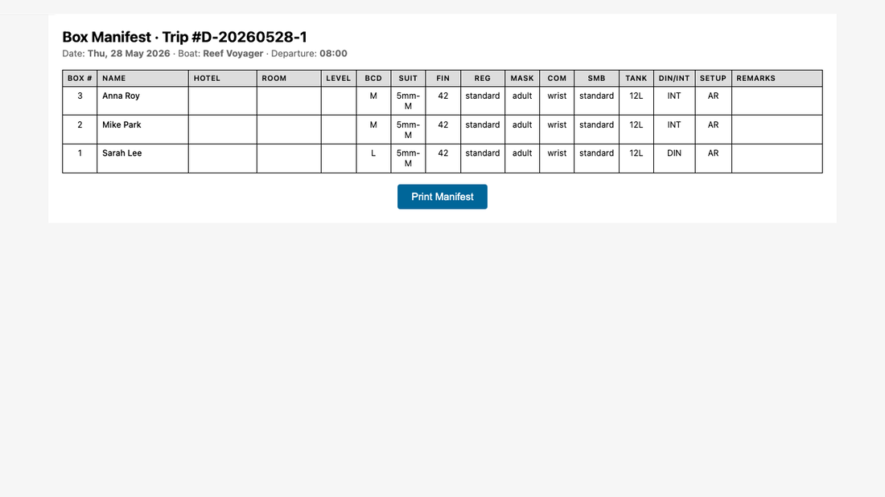
The box manifest gets printed and goes on the boat
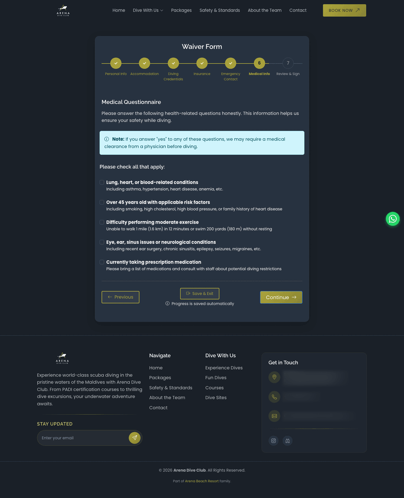
The medical questionnaire, filled in before anyone gets wet
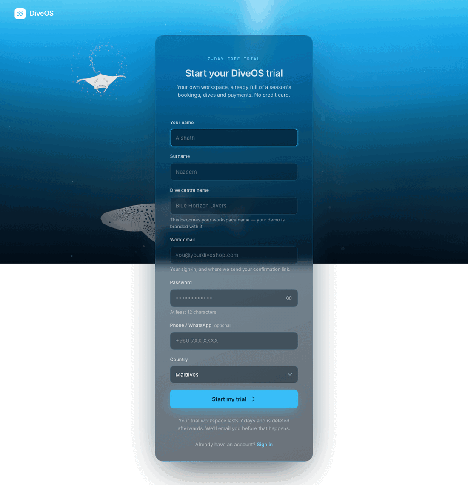
The self-serve trial form. Nothing exists in the database as a tenant until the confirmation link is clicked
07 · still mid-migration
What Is Not Settled
The deploy story is mid-migration, and the documentation is behind the pipeline. The README still describes Coolify, and CLAUDE.md manages to describe both: Coolify in its second paragraph, Kamal 2 in detail forty lines further down. The CI pipeline actually runs Kamal 2 to a self-managed VPS behind kamal-proxy, and config/deploy.yml is among the more recently touched files in the repository. The word "kamal" appears zero times in the README. There is an open branch to fix the docs and it hasn't been merged.
Looking at the whole arc, it goes Heroku template, then Render, then Coolify, then Kamal on hardware I control. Each hop removed a hosted layer. I didn't plan that as a direction and I'm fairly sure it is one.
Eighteen inherited GitHub Actions workflows are still sitting in the repository, pointing at the GitHub mirror that is being retired. TODOS.md carries an open decision to port them or delete them, and it's been open a while.
Thirty call sites of design-system debt are still waiting to be migrated, and the registry file that records the component families is two months stale against the maturity file next to it.
DiveOS is private, proprietary and in closed beta. There is no public repository to link and no public URL to send you to. Arena Dive Club is still the primary tenant, and the product is still being shaped by what one real dive centre needs on a real morning with a boat leaving at seven.